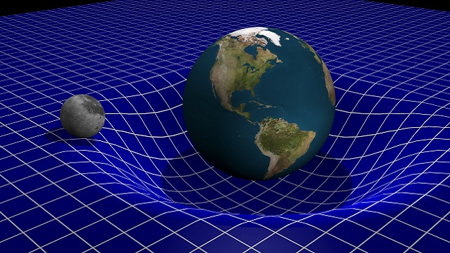

O que é a gravidade?
A gravidade é a propriedade que faz com que os corpos sejam atraídos para o centro da terra. Este fenômeno é uma consequência da curvatura formada no espaço-tempo do objeto. Sua unidade de medida é 9,8 m/s².

Em anexo, representação da teoria da relatividade representando o espaço-tempo.
Qual o valor da massa da terra?
A massa da Terra possui o equivalente a 5,9 sextilhões de toneladas.
Repositório de imagens